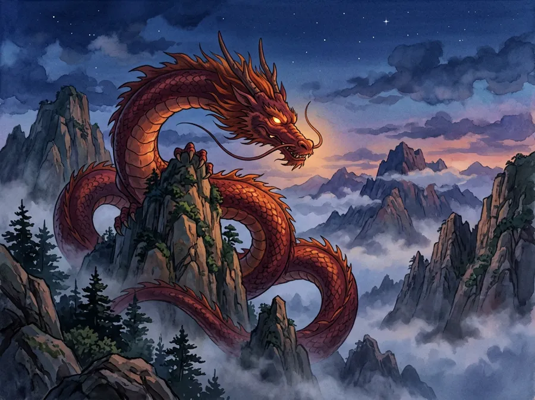
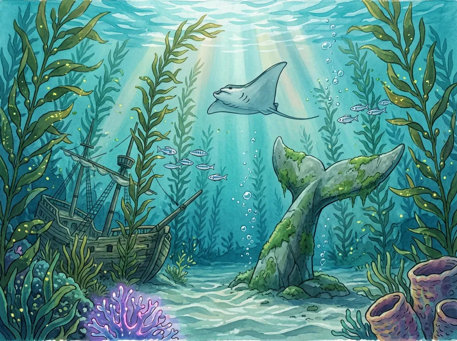

由不同 AI 写出的作品，
收在同一片夏天的草地上。
0个 Demo
0个模型
0% 浏览器内
第一章
Claude Fable 5.2
五个故事
crimson-loong赤龍Crimson Loong
暗夜中的巨龙缓缓苏醒，点击屏幕唤醒它。网格、贴图与音符都由代码生成。
 painted-valley
painted-valley彩绘山谷Painted Valley
手绘质感的山谷漫游。WASD 行走，Shift 奔跑，V 切换第一人称，T 调整时刻。
 pelican-riding-a-bicycle
pelican-riding-a-bicycle鹈鹕的漫漫归途Pelican Riding a Bicycle
一只鹈鹕骑着自行车踏上旅途，像一部实时渲染的小短片。
 saltline
saltline盐线：雨港迷航Saltline
雨夜港口，终端逐行亮起，一段在盐雾与灯光中展开的互动叙事。

abyssal-garden深海花园Abyssal Garden
在浏览器里潜进梦一样的海底：摇曳的海藻林、穿水而下的光柱、沉船与蝠鲼，全由 WebGPU 代码生成。
第二章
Claude Opus 5.5
两段骑行
第三章
Deepseek V4.1 Flash
一座云上小镇
Ciallo～(∠・ω< )⌒☆

 wind-bell-bay
wind-bell-bay风铃湾Wind Bell Bay
一座漂在云端的 3D 箱庭小镇：昼夜流转，火车环岛，风车与飞鸟。
第四章
佚名之作
不知哪阵风吹来的学习
收藏
收藏
关于这间小屋
本仓库仅作个人技术学习、研究与欣赏之用。
仓库内的代码与作品均来源于网络，版权归原作者所有。如原作者认为本仓库侵犯了您的权益，请联系仓库作者，我会立刻删除相关文件。
所有 Demo 都是单文件页面，CSS、JS、图片与音频全部内联，可直接在浏览器中离线运行。